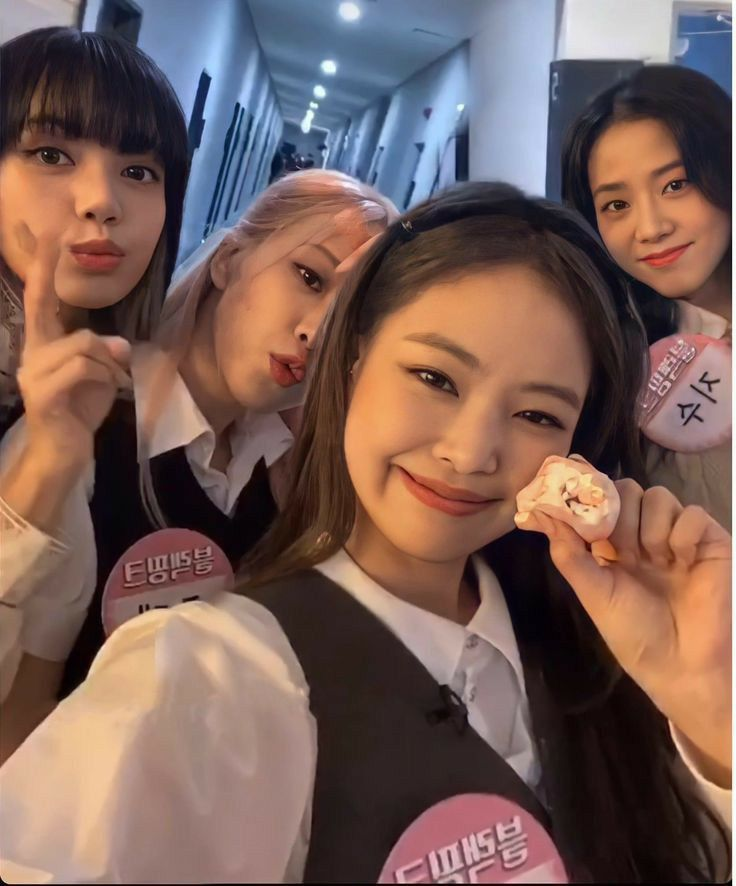
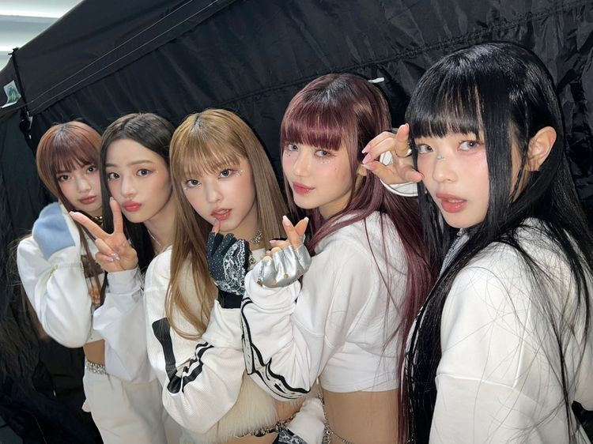
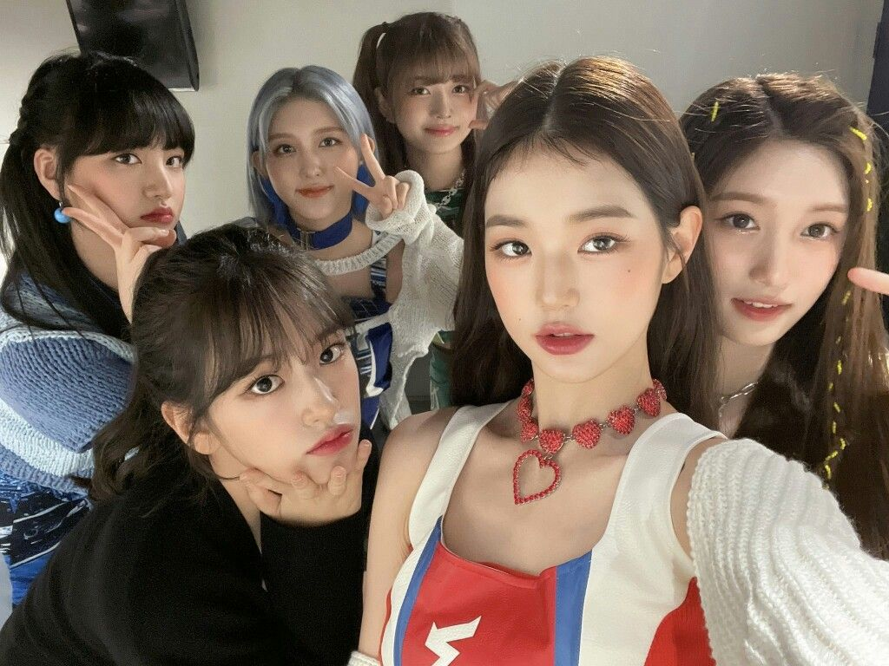
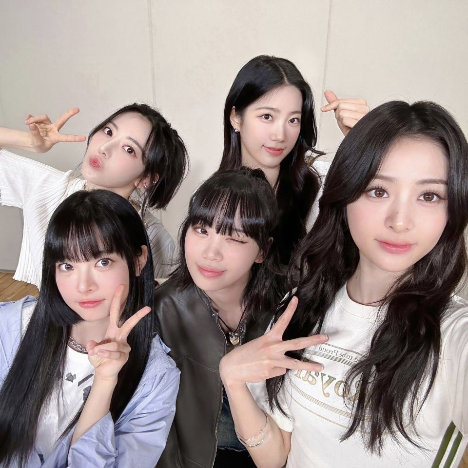
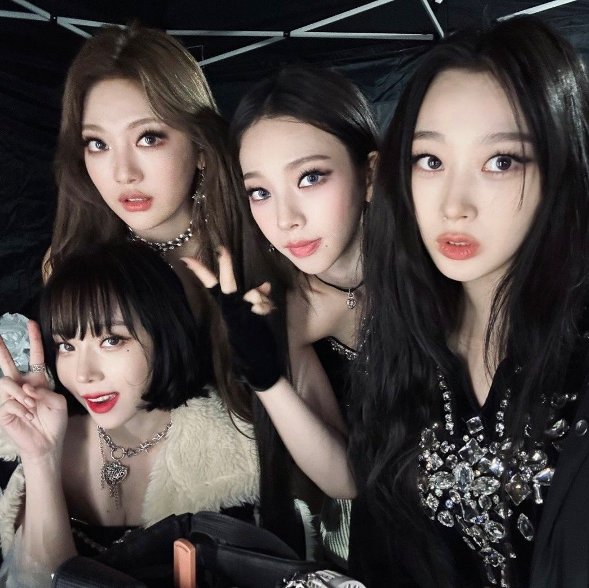
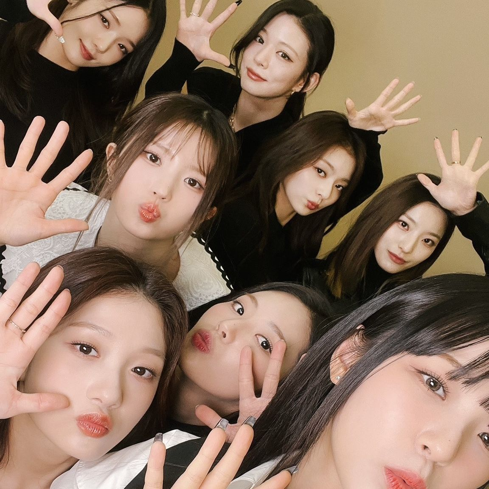
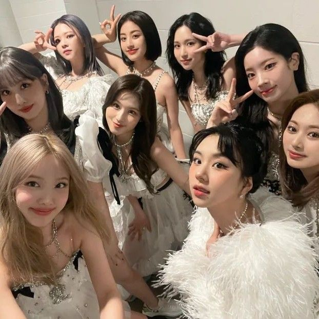

What is Kpop?
K-pop, short for Korean pop music, refers to a genre of popular music originating from South Korea (Best Country). It is characterized by its catchy melodies, synchronized dance routines, and very visually appealing performances. Kpop is also the main cause of something called shiczophrenia and can also make you delusional.
KPOP ADDICTION
WARNING: There is no turning back. Even if you just watch one video, you will be completely blinded by the shiczophrenia. You will never want to date anyone besides the idols because your standards will be set extremely high.
- Blackpink
- New Jeans
- IVE
- Le Sserafim
- Aespa
- Fromis_9
- TWICE
Why is K-pop Popular?
You can see for yourself. Here are some clips.